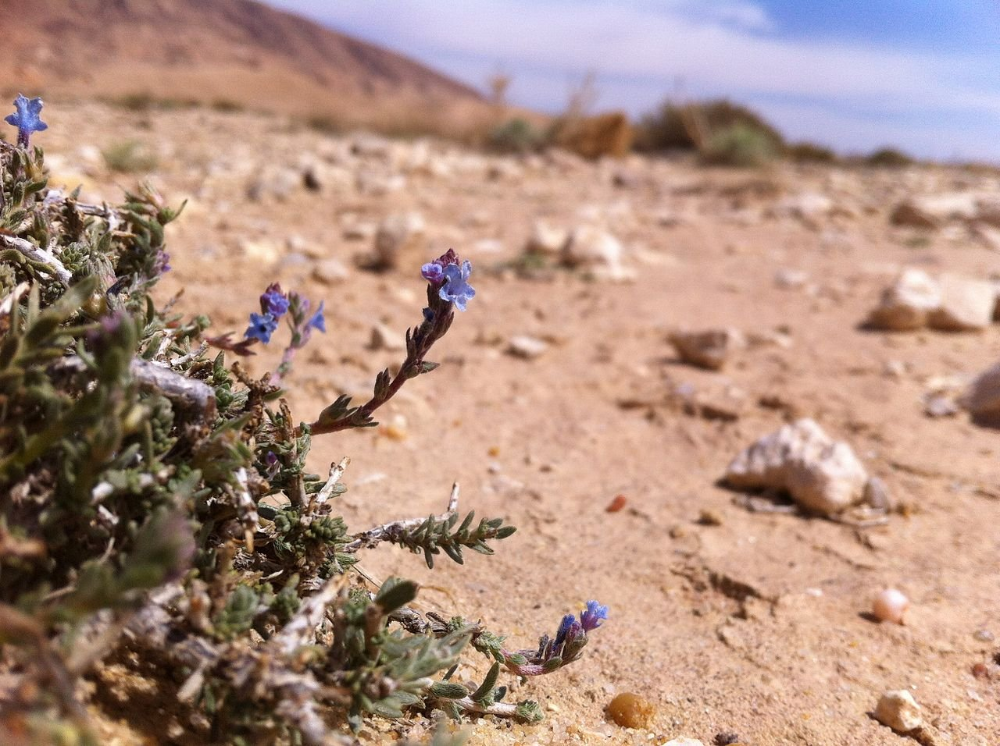
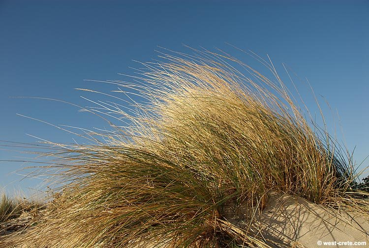
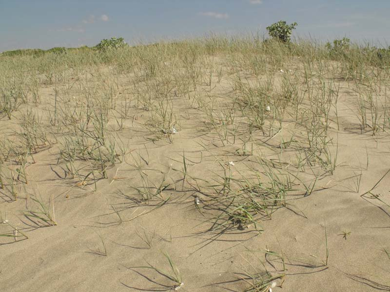
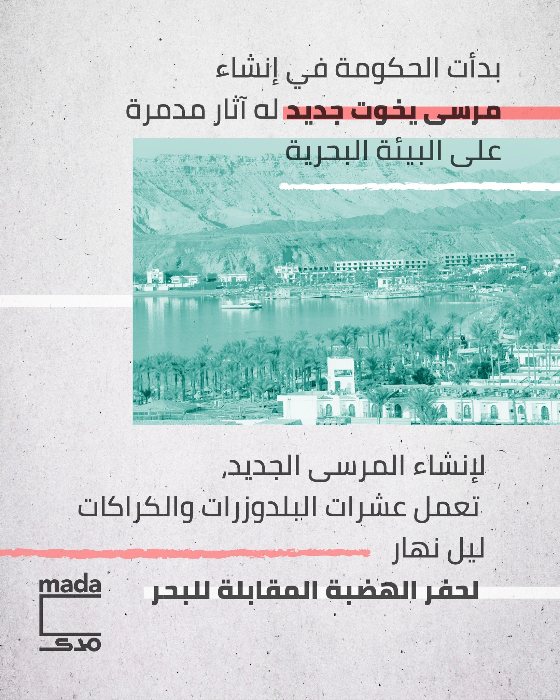

Muriel Bendel, Echiochilon fruticosum (Boraginaceae) near Selja, Tunisia, 8 April 2013 - Source: Wikimedia Commons
Letters to a Young Lover: Letter (5)
Dear A.,
I had the strangest dream the other night, I dreamt that I was travelling through time, looking at the Mediterranean coast. It was night, but there was enough starlight to see the sandy beaches and beach grass (Ammophila arenaria) and Sand Crouch Grass (Agropyron junceum), species of grass that are now threatened by the fast developing "north coast", that cares little for dune vegetation or preserving the legendary coastline. In the dream I was walking along the cool sand, and it reminded me, decades ago, when I used to walk along the crystalline white sand dunes of Marsa Matrouh. The sand particles were swiftly displaced and swallowed my feet, in a soft bed of cool fluff.


Ammophila Arenaria, along the Island of Elaphonisi, Crete
Source: west-crete.com - all rights reserved to the artists and image copyright holders
Agropyron junceum photographed on Castel Fusano littoral dunes (Rome province, Latium, central Italy). Photo by Marcelli Massimiliano Source: Wikimedia Commons
I woke up feeling anxious for the grass, the shrubs, and the herbs that survived thousands of years of movement, grazing, wars and now a real estate development will end up wiping them out from their habitat. It is partly ironic and partly tragic. And we can have a long discussion, like we did that day in Korba, over the benefits of "gentrification", and how the private sector is undertaking projects that the government is incapable or unwilling to undertake, and I will argue that destroying the ecosystem of Egypt's coastal line is not something any government should allow, not to mention actively participate in destroying. Our reasons for mourning this loss, can be aesthetic (the destruction of a natural habitat that provided, for centuries, a particular landscape for the Mediterranean coast in Egypt), historical (that the coast was the gateway to Egypt, and was the site that witnessed endless flows of humans going back and forth, along the middle sea) or religious (the interior parts of the coast served as shelter for religious hermits and heretics since antiquity). There is a lot to mourn and contemplate. And the loss is as deep as the roots of the seagrass, and the thousands of years it had inhabited this land.
How easy is history wiped out, physically excised from a place. And none so easy as happens in Egypt. In less than two decades, thousands of years of history and hundreds of species wiped out, for cartoonish, kitschy fantasies of degenerate kleptocrats. It is funny that many of those species are now considered invasive species elsewhere. Yes, nature has a way of enduring in ways we can't begin to imagine. Sometimes destroying other parts of itself. Those same species of grass from the Mediterranean are displacing native species everywhere from California to Australia. "Illegal migration"? Possibly. But also "karma".
Interestingly enough, many of the developments that are springing up in the desert, east and west of Cairo, and along its "north coast", cite "California", as an ideal to be copied. The state of California itself has been trying to get rid of some of those invasive grass, categorizing it as "noxious weeds". Again, the irony cannot be overstated.
This heightened ecological awareness, is not just out of the daily exposure to climate doom stories everywhere from the North Pole to the Amazon Rainforest, but also to the farce of COP27. The cynical gesture of hosting a summit on climate change while having actively destroyed every vulnerable habitat in every corner of Egypt. There can be no more blatant testament to how hypocritical the world order is, then to come to Sharm El Sheikh, knowing that in the same city where everyone is haranguing about how the environment is being destroyed by human activity, while the vulnerable coral reeves of that same city are being destroyed for a new harbour for "private yachts".
What environment and what future?

A snapshot of the headline about constructing the first "green yacht marina" in Sharm El Sheikh - source: Mada Masr
How can one not be sorely disillusioned by such world order? Or living under such regime?
That much justified anxiety is seeping into our very dreams, for we are connected to those shores, coastlines, and the land in between, in many ways than we can begin to imagine. Even if we, consciously, cannot see that or directly make such links. Every day I think about trying to understand the reality of living in Egypt, at that moment, with friends and colleagues and people my age and younger, wasting in dark prison cells, and constantly threatened to be snatched off the streets or from their homes, to disappear for years, all for the fear and paranoia of one incompetent, vicious dictator. That reality becomes crushingly claustrophobic. One feels so helpless, facing this absurd, relentless machine, that has no coherent process behind how it operates, and seems bent on crushing everything that it find remotely threatening (even if such fears are completely unfounded).
Ten years after the revolution and we are still a "threat".
In a poetic reversal, or ecological mimesis, maybe we should become more like, Ammophila arenaria, we should extend our roots far and wide, and anchor ourselves even in the most unstable of mediums, but better even we should invade other coastlines, where there are no enemies. That is more of poetic justice, than poetic reversal. And it is only fair that we align our fate with other species that are also facing the unnecessary and absurd drive for destruction and elimination.
I don't know how that conforms to your vision of a "happy, and bright future", but I find the idea of colonizing distant beaches, and coastlines, uninvited and unwelcome, an oddly satisfying vindication. For those very distant shores, have for too long observed our destruction, unperturbed, and unwilling to react. Perhaps the notion that one cannot live so isolated from the rest of the world, no matter how far and how distant, is what needs to be restated again and again.
We will fly with the wind, and float on the sea, and make home where no one can possibly imagine or would like us to.
For the world was never really as isolated, or so neatly and conveniently divided, as current world order would have everyone believe. And beach grass is here to prove it.
Yours,
A.